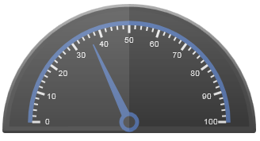
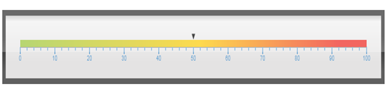

Few examples of the Essential Gauge applications are given below:
Circular Gauge
Circular Gauge can be used in many different ways in an application. The best and familiar example of a circular gauge application is a speedometer. The speedometer is designed to be placed in a racing game application to denote the speed of a vehicle.

Figure 1 Speedometer
Circular Gauge can accommodate multiple scales and multiple pointers at the same time. A more complex speedometer can also be designed by using the Circular Gauge.
Linear Gauge
Linear Gauge can be imagined as a linear form of Circular Gauge. There are various applications in which the Linear Gauge can be used. One such real world application of the Linear Gauge is Volume control as shown in the following screenshot:

Figure 2 Linear Gauge
Digital Gauge
Digital Gauges are used to display alpha-numeric values in a virtual digital display. It can be used in many ways depending on the requirements. Digital Gauge can be used to display the current time in a virtual digital clock. The digital clock preceded by a text, reads "11:27:20 pm" as shown in the following figure:
Figure 3 Digital Gauge
Rolling Gauge
Rolling Gauge is used to display values in segments with rolling effect. One real world example of the Rolling Gauge is in Speedometer to display the number of kilometers travelled.
Figure 4 Rolling Gauge